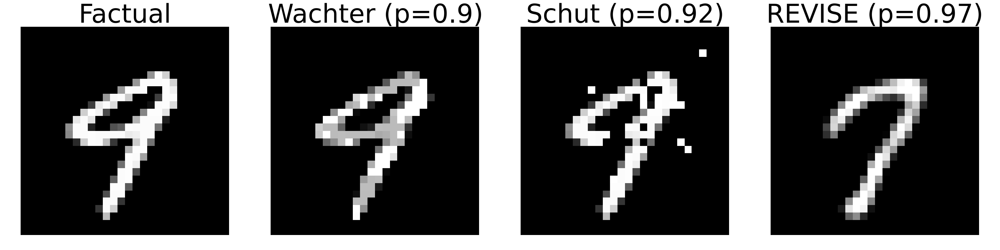

ECCCos from the Black Box
Faithful Model Explanations through Energy-Based Conformal Counterfactuals

Counterfactual explanations offer an intuitive and straightforward way to explain opaque machine learning (ML) models. They work under the premise of perturbing inputs to achieve a desired change in the predicted output. There are typically many ways to achieve this, in other words, many different counterfactuals may yield the same desired outcome. A key challenge for researchers has therefore been to, firstly, define certain desirable characteristics of counterfactual explanations and, secondly, come up with efficient ways to achieve them.
One of the most important and studied characteristics of counterfactual explanations is plausibility. Broadly speaking, counterfactuals are considered plausible if they are indistinguishable from actual observed data in the target domain. Plausibility is positively associated with actionability, robustness (Artelt et al. 2021) and causal validity (Mahajan, Tan, and Sharma 2020). To achieve plausibility, many existing approaches rely on surrogate models. This is straightforward but it also convolutes things further: it essentially reallocates the task of learning plausibile explanations for the data from the model itself to the surrogate.
In our AAAI 2024 paper, Faithful Model Explanations through Energy-Based Conformal Counterfactuals (ECCCo), we argue that in our pursuit of plausible explanations, we should not forget that ultimately we are in the business of explaining models. We propose that we should not only look for explanations that please us but rather focus on generating counterfactuals that faithfully explain model behavior. It turns out that we can achieve both faithfulness and plausibility relying solely on the model itself by leveraging recent advances in energy-based modelling and conformal prediction. We support this claim through extensive empirical studies and believe that ECCCo opens avenues for researchers and practitioners seeking tools to better distinguish trustworthy from unreliable models.
This is a companion post to our recent AAAI 2024 paper co-authored with Mojtaba Farmanbar, Arie van Deursen and Cynthia C. S. Liem. The paper is a more formal and detailed treatment of the topic and is available here.
Pick your Poison
There are two major debates in the field of Explainable AI (XAI). The first one centers around the role of explainability in AI: do we even need explanations and if so, why? Some have argued that we need not care about explaining models as long as they produce reliable outcomes (Robbins 2019). Humans have not shied away from this in other domains either: doctors, for example, have prescribed aspirin for decades without understanding why it is a reliable drug for pain relief (London 2019). While this reasoning may rightfully apply in some cases, experiments conducted by my colleagues at TU Delft have shown that humans do not make better decisions if aided by a reliable and yet opaque model (He, Buijsman, and Gadiraju 2023). In these studies, subjects tended to ignore the AI model indicating that they did not trust its decisions. Beyond this, explainability comes with numerous advantages such as accountability, control, contestability and the potential for uncovering causal relationships.
“If we can blindly rely on the decisions made by an AI, why should we even bother to come up with explanations?”
I must confess I had never even seriously considered this as an option until attending Stefan Buijsman’s recent talk at a Delft Design for Values workshop. It is an interesting critique of recent efforts towards XAI, especially considering that the field has so far struggled to produce satisfactory and robust results with meaningful real-world impact. Much like He, Buijsman, and Gadiraju (2023) find that blind reliance on reliable AI models does not seem to work in practice, numerous other studies have shown that explanations for AI models either fail to help users or even mislead them Lakkaraju and Bastani (2020).
So, have all efforts toward explainable AI been in vain? Should we simply stop explaining black-box models altogether as proposed by Rudin (2019)? Having worked in this field for a little over 2 years now, I have personally grown more and more skeptical of certain trends. In particular, I think that the community has focused too much on finding explanations that please us independent of the model itself. This is a bit like applying a band-aid to a wound without first cleaning it. At best, plausible explanations for untrustworthy models provide a false sense of security. At worst, they can be used to manipulate and deceive. The AAAI paper presented in this post is very much born out of skepticism about this approach.
Nonetheless, I do not think all hope is lost for XAI. I strongly believe that there is a need for algorithmic recourse as long as we continue to deploy black-box models for automated decision-making. While I am fully supportive of the idea that we should always strive to use models that are as interpretable as possible, I also think that there are cases where this is not feasible or it is simply too convenient to use a black-box model instead. The aspirin example mentioned above is a striking example of this. But it is easy enough to stretch that example further to illustrate why explainability is important. What if the use of aspirin was prohibited for a small minority of people and there was a reliable, opaque model to decide who belonged to that group? If you were part of that group, would you not want to know why? Why should you have to endure headaches for the rest of your life while others do not?
In summary, I think that—like it or not—we do need to bother.
The second major debate is about what constitutes a good explanation, because, crucially, explanations are not unique: was your headache cured by the aspirin you took before going to sleep or sleep itself? Or a combination of both? This multiplicity of explanations arises almost naturally in the context of counterfactual explanations. Unless the combination of input features for which the model predicts the target class or value is unique, there is always more than one possible explanation. As an illustrative example, consider the counterfactuals presented in Figure 1. All of these are valid explanations for turning a ‘nine’ into ‘seven’ according to the underlying classifier (a simple multi-layer perceptron). They are all valid in the sense the model predicts the target label with high probability in each case. The troubling part is that even though all of the generated counterfactuals provide valid explanations for why the model predicts ‘seven’ instead of ‘nine’, they all look very different.
So, which explanations do we trust most? Which one would you choose to present to an audience to explain how the classifier decides which digit to predict? Arguably, the counterfactual on the far right looks most like a ‘seven’, so I am willing to bet that most people would simply choose that one. It is valid after all and it looks plausible, while the other two counterfactuals might just lead to awkward questions from particularly some of the more interrogative audience members. In any case, I mentioned earlier that more plausible explanations tend to also be more actionable and robust, so this seems fair game. The counterfactual produced by REVISE (Joshi et al. 2019) is the poison we will pick—dump the rest and move on1. Plausibility is all we need!
I am exaggerating but I do think that as a community of researchers studying counterfactual explanations, we have become so absorbed by the pursuit of a few desiderata that we have forgotten that ultimately we are in the business of explaining models. Our primary mandate is to design tools that help us understand why models predict certain outcomes. How useful is a plausible, actionable, sparse, causally valid explanation in gaining that understanding, if there exist a whole bunch of other valid explanations that do not meet these desiderata? Have we significantly improved our understanding of the underlying classifier in Figure 1 and therefore established a higher degree of trust in the model, simply because we have found a plausible counterfactual?
In my mind, we most certainly have not. I would argue that the existence of a valid and plausible explanation merely serves to reassure us that the model is not entirely ignorant about meaningful representations in the data. But as long as entirely implausible counterfactuals are also valid according to the model, selectively relying only on the subset of plausible counterfactuals may lead to a wrong sense of trust in untrustworthy models. That is why in our paper we argue that explanations should be faithful first, and plausible second.

Faithful First, Plausible Second
References
Footnotes
Citation
@online{altmeyer2024,
author = {Altmeyer, Patrick},
title = {ECCCos from the {Black} {Box}},
date = {2024-02-08},
url = {https://www.paltmeyer.com/blog//blog/posts/eccco},
langid = {en}
}